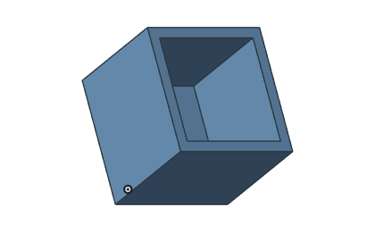

带筋薄壁壳体与安装结构
以开口设备壳体为主题，将薄壁、底板、内部隔筋、空心安装柱和外部连接耳组合展示。旋转模型，从内部和底部观察结构关系。
模型结构与观察重点
- 四个空心安装柱与四个带孔连接耳
- 三道横向隔筋与一道纵向连接筋
- 连续外壁、薄底板及内部多分区结构
如何查看这个案例
在首页案例区选择“带筋薄壁壳体与安装结构”对应的标签，使用鼠标拖动旋转、滚轮缩放或右键平移。通过网格显示查看离散结构，使用复位视角恢复初始观察位置。

示意范围与实际验证
这里的交互模型在浏览器中生成，用于解释工程结构和几何关系，并非 GME 内核导出的精确计算结果。实际应用需结合对应模块、输入参数、容差及版本测试；本页不提供性能或精度对比结论。